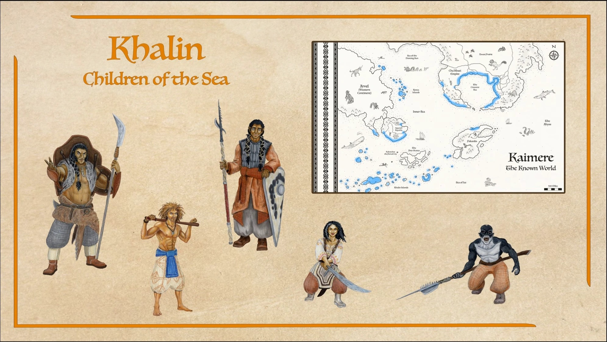
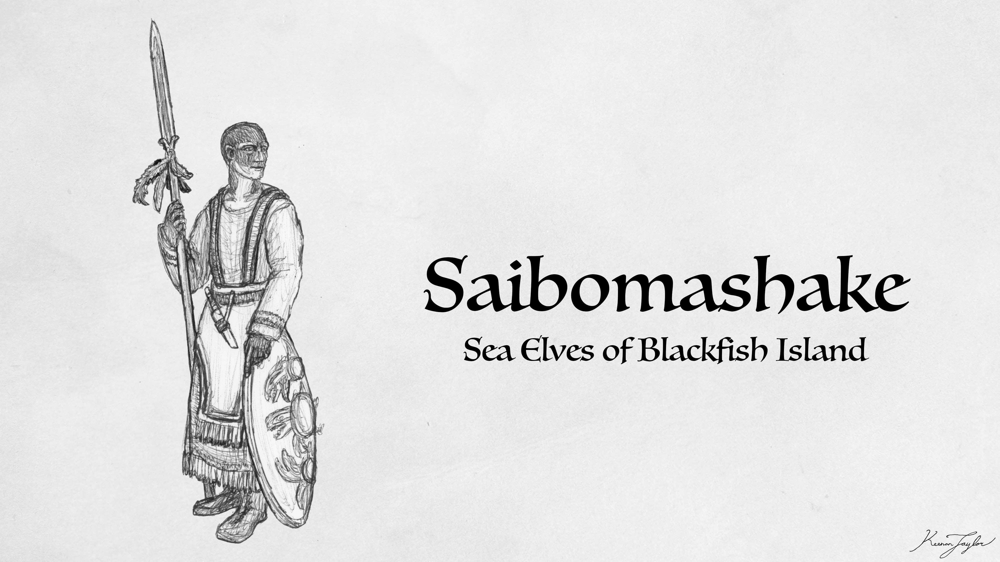
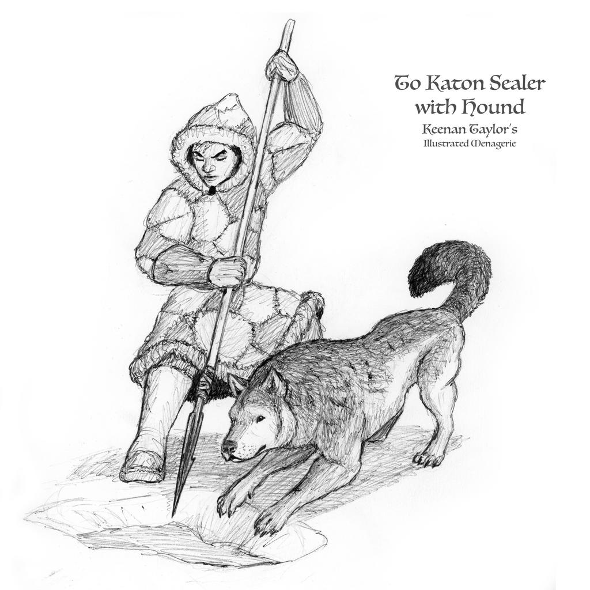
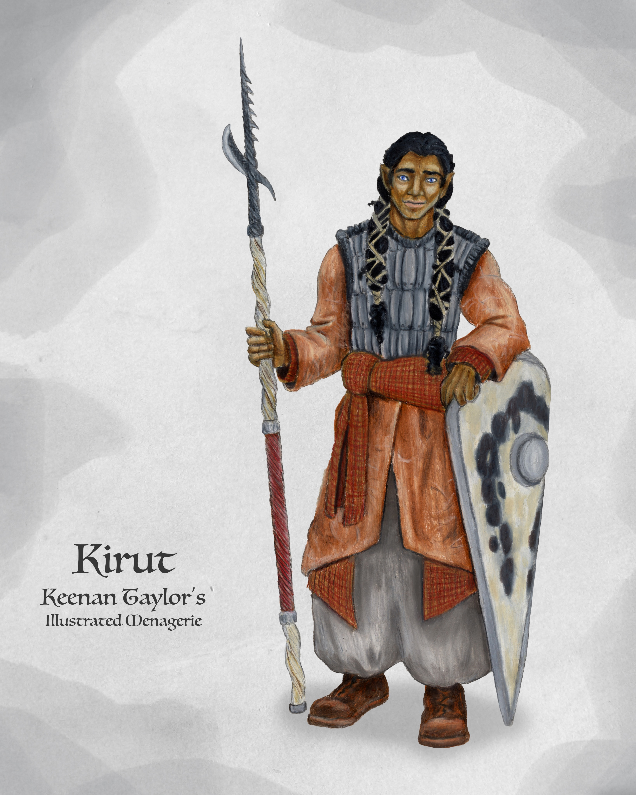
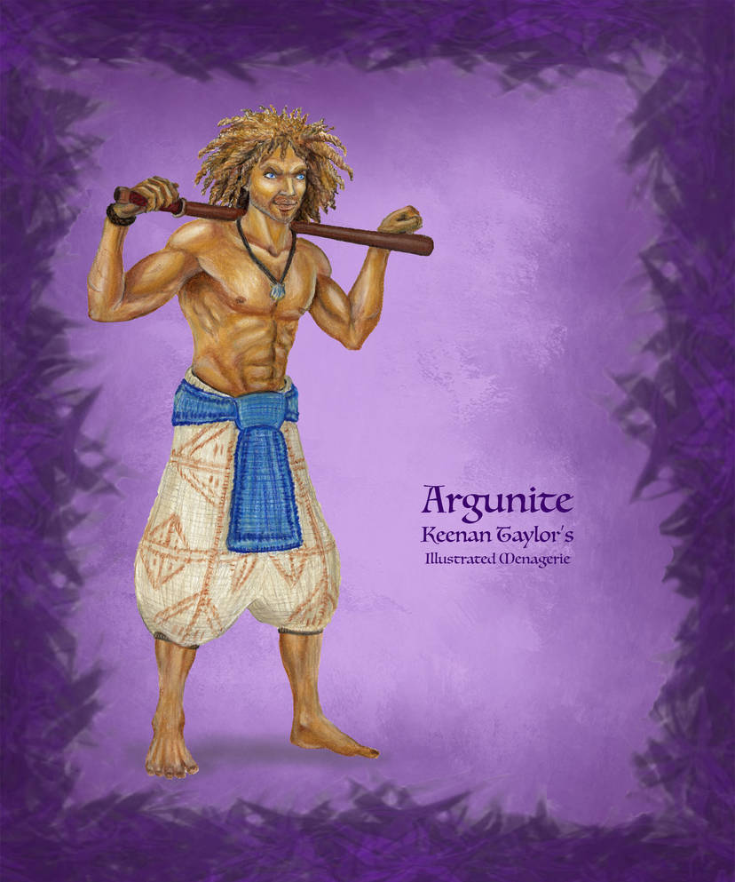

01 · INTRODUCTION
Overview

The Khalin, collectively known as the Children of the Sea, constitute one of the most widespread ethnic and cultural groupings among the Kaimerans of the Known World. Rather than representing a single nation, unified ethnicity, or centralized civilization, the term encompasses numerous maritime peoples whose societies have developed across islands, archipelagos, coastal settlements, and the seaways connecting them. Their communities differ considerably in language, religion, political organization, economic activity, and relationships with neighboring populations. Nevertheless, generations of seafaring, migration, exchange, and adaptation to marine environments have produced a recognizable family of cultures whose inhabitants share certain attitudes toward travel, personal independence, hospitality, and the ocean itself. For many Khalin, the sea is not simply a geographical feature bordering their homeland. It is the principal environment through which they understand their place in the world, the means by which they sustain their communities, and the route connecting them to distant peoples.
The geographical distribution of the Khalin extends across much of the Known World's maritime regions. The Kentarim inhabit islands north of Qajar, where reefs, shallow waters, and intricate island channels have shaped a society deeply dependent upon navigation and practical knowledge of marine ecosystems. Farther west, the Tsuu Henjin occupy Blackfish Island, where an unusually insular culture has developed around the religious and social significance of orcas and the predatory hierarchy of the sea. The Akanuk are particularly associated with the western Khalin islands, where whaling and the processing of marine resources have become central to economic and social life. In the southern seas, the reclusive To Katon maintain their own distinctive traditions, although comparatively little information about their society is presented here. The Eskadin, meanwhile, have historically occupied islands in the southern reaches of the Great Khalin Sea and have developed extensive mercantile networks and diaspora communities throughout the Known World. These peoples represent different expressions of maritime civilization rather than subdivisions of a culturally uniform population.
The diversity of the Khalin reflects the extraordinary variety of environments encompassed by the Known World's island systems. Coral reefs, lagoons, sheltered bays, exposed coastlines, deep-water channels, productive fishing grounds, and storm-prone open seas impose different demands upon the communities that inhabit them. Some Khalin societies are organized around fishing, inter-island trade, and the construction of vessels suited to shallow waters. Others depend upon whaling, long-distance commerce, or the movement of people and goods between distant ports. Still others have deliberately restricted their contact with outsiders, developing social institutions and spiritual traditions that reinforce their independence. These differences are important because the Khalin cannot be adequately understood through a single economic model or political history. Their shared maritime orientation provides a broad cultural framework, but local environments and historical experiences have determined how individual communities have interpreted that inheritance.
One of the most recognizable characteristics associated with the Khalin is their appreciation for freedom and travel. Many individuals spend extended periods aboard vessels, moving between islands and ports and sometimes passing years with little contact with permanent settlements. For these people, mobility is not necessarily a temporary interruption of ordinary life. It may instead constitute the ordinary condition of existence, with voyages determining the rhythm of work, family relationships, trade, and social obligations. A person's connections may extend across numerous islands, while friendships, professional associations, and kinship relationships continue despite considerable physical separation. Maritime mobility also allows individuals to encounter different languages, customs, and political systems without necessarily abandoning their own traditions. Although not every Khalin community embraces unrestricted travel, the ability to move between places remains an important element of the broader cultural image associated with the Children of the Sea.
Hospitality is another widely recognized Khalin value. Many of their communities welcome travelers from distant regions, treating the arrival of foreign sailors as an ordinary consequence of life within an interconnected maritime world. Such openness is practical as well as cultural. Seafarers depend upon the assistance of others when vessels require repair, supplies become exhausted, weather prevents departure, or an unexpected emergency forces a ship to seek shelter. Knowledge of unfamiliar waters is often obtained through conversations with local navigators, fishermen, and harbor communities, while commercial relationships depend upon trust established over repeated encounters. Hospitality therefore helps maintain the social connections that make extensive maritime travel possible. This tendency should not, however, be interpreted as universal friendliness or an absence of cultural boundaries. The Tsuu Henjin, in particular, are notable for their deliberate hostility toward many outsiders, demonstrating that a shared maritime background does not necessarily produce an identical attitude toward foreign visitors.
The Khalin are consequently best understood as a broad cultural and demographic family whose unity emerges from interaction rather than political consolidation. Their societies have exchanged goods, technologies, stories, religious traditions, and navigational knowledge for generations, but they have also maintained independent identities and occasionally developed antagonistic relationships. The term Khalin describes a recognizable maritime world rather than a single people with common institutions. Its significance lies in the ways that seafaring has connected otherwise distinct communities while allowing each to retain its own understanding of the sea, the land, and the societies beyond its shores.
02 · CULTURAL HORIZONS
Geographical Distribution

The Khalin are distributed across several island groups and maritime regions of the Known World, with their constituent populations occupying different positions within the wider network of seaways. The islands north of Qajar are associated with the Kentarim, whose settlements and traditions reflect the close relationship between reef environments and island life. Westward, Blackfish Island is home to the Tsuu Henjin, a population whose geographic isolation has been reinforced by deliberate restrictions upon foreign access and extensive avoidance of permanent settlement in the island's interior. The western Khalin islands are strongly associated with the Akanuk, whose settlements concentrate along protected coastlines and whose economy depends heavily upon the exploitation and processing of marine resources.
The southern seas contain additional Khalin populations, including the reclusive To Katon and the historically widespread Eskadin. The latter developed from island societies whose connections extended across the southern reaches of the Great Khalin Sea. Although the expansion of the Qajarith Republic transformed the political circumstances of the Eskadin homeland, their cultural presence was not confined to the islands themselves. Merchant families, sailors, fishermen, and expatriate communities maintained relationships across distant ports, allowing Eskadin traditions to survive beyond their original territorial center. Their history demonstrates that a maritime culture can remain geographically dispersed without losing its collective identity.
These distributions should not be interpreted as rigid ethnic boundaries. Maritime routes frequently connect neighboring island groups, and the movement of ships makes the separation between coastal populations more permeable than many terrestrial borders. Sailors may spend considerable portions of their lives in foreign harbors, merchants may establish households far from their ancestral islands, and individuals may maintain several overlapping cultural affiliations. At the same time, isolation can be substantial even between geographically close communities when dangerous waters, political hostility, religious restrictions, or unfamiliar navigation prevent regular contact. The geography of the Khalin is therefore defined not only by the location of their islands but also by the routes, relationships, and barriers that determine how people move between them.
03 · THE WAY OF LIFE
Maritime Lifestyle
The sea occupies a central position in the economic organization of many Khalin societies. Fishing, shellfish gathering, the collection of marine plants, pearl diving, whaling, shipbuilding, and long-distance commerce provide livelihoods that would be difficult to reproduce through terrestrial agriculture alone. The relative importance of these activities varies between communities, reflecting differences in local ecology and historical development. Reef-dwelling populations may depend upon shallow-water fisheries and specialized vessels capable of navigating intricate channels, while whaling communities require larger cooperative operations, durable equipment, and substantial facilities for processing their catches. Mercantile populations place greater emphasis upon transportation, storage, commercial agreements, and the maintenance of relationships between distant ports. These occupations are distinct, but each demonstrates how maritime environments shape the practical foundations of Khalin society.
Maritime knowledge is consequently an important form of expertise. Successful navigation requires more than the ability to steer a vessel across open water. Sailors must interpret changing winds, currents, tides, waves, cloud formations, reef patterns, and the behavior of marine animals. Local knowledge may distinguish safe channels from apparently navigable waters in which a vessel could be damaged or trapped. It can also reveal the seasonal movements of fish, whales, and other marine organisms upon which communities depend. Such knowledge is accumulated through experience and transmitted through instruction, observation, and oral tradition. Among many Khalin, experienced sailors and navigators therefore possess considerable social prestige because their judgment directly affects the safety and prosperity of others.
Ships also occupy a distinctive place within Khalin social life. A vessel can be a means of transportation, a workplace, a source of livelihood, and the setting in which relationships develop over long periods. Crews may remain together through multiple voyages, developing customs, shared histories, and obligations that extend beyond the immediate demands of a particular expedition. In some communities, vessels are treated with an affection that approaches the regard given to members of a household, while the maintenance of ropes, sails, hulls, and navigation equipment is understood as an essential responsibility. The loss of a vessel can therefore represent more than a financial setback. It may mean the destruction of a community's accumulated labor, the interruption of established relationships, and the loss of a familiar means of navigating the world.
The dangers of maritime life also encourage cooperation. Storms, dangerous animals, navigational errors, and mechanical failures can threaten even experienced crews, while an isolated vessel may have little opportunity to obtain assistance without the goodwill of nearby communities. Among the more outward-facing Khalin, helping sailors in distress is an important expression of hospitality and mutual obligation. Practical assistance may involve providing shelter, supplying food and water, repairing damaged vessels, or sharing information about hazardous waters. These relationships create forms of reciprocity that extend across ethnic and political boundaries. However, the same dependence upon collective strength can produce strict internal expectations, particularly within societies where discipline and cooperation are regarded as indispensable to survival.
04 · LIVELIHOODS
Society and Community
The sea occupies a central position in the economic organization of many Khalin societies. Fishing, shellfish gathering, the collection of marine plants, pearl diving, whaling, shipbuilding, and long-distance commerce provide livelihoods that would be difficult to reproduce through terrestrial agriculture alone. The relative importance of these activities varies between communities, reflecting differences in local ecology and historical development. Reef-dwelling populations may depend upon shallow-water fisheries and specialized vessels capable of navigating intricate channels, while whaling communities require larger cooperative operations, durable equipment, and substantial facilities for processing their catches. Mercantile populations place greater emphasis upon transportation, storage, commercial agreements, and the maintenance of relationships between distant ports. These occupations are distinct, but each demonstrates how maritime environments shape the practical foundations of Khalin society.
Maritime knowledge is consequently an important form of expertise. Successful navigation requires more than the ability to steer a vessel across open water. Sailors must interpret changing winds, currents, tides, waves, cloud formations, reef patterns, and the behavior of marine animals. Local knowledge may distinguish safe channels from apparently navigable waters in which a vessel could be damaged or trapped. It can also reveal the seasonal movements of fish, whales, and other marine organisms upon which communities depend. Such knowledge is accumulated through experience and transmitted through instruction, observation, and oral tradition. Among many Khalin, experienced sailors and navigators therefore possess considerable social prestige because their judgment directly affects the safety and prosperity of others.
Ships also occupy a distinctive place within Khalin social life. A vessel can be a means of transportation, a workplace, a source of livelihood, and the setting in which relationships develop over long periods. Crews may remain together through multiple voyages, developing customs, shared histories, and obligations that extend beyond the immediate demands of a particular expedition. In some communities, vessels are treated with an affection that approaches the regard given to members of a household, while the maintenance of ropes, sails, hulls, and navigation equipment is understood as an essential responsibility. The loss of a vessel can therefore represent more than a financial setback. It may mean the destruction of a community's accumulated labor, the interruption of established relationships, and the loss of a familiar means of navigating the world.
The dangers of maritime life also encourage cooperation. Storms, dangerous animals, navigational errors, and mechanical failures can threaten even experienced crews, while an isolated vessel may have little opportunity to obtain assistance without the goodwill of nearby communities. Among the more outward-facing Khalin, helping sailors in distress is an important expression of hospitality and mutual obligation. Practical assistance may involve providing shelter, supplying food and water, repairing damaged vessels, or sharing information about hazardous waters. These relationships create forms of reciprocity that extend across ethnic and political boundaries. However, the same dependence upon collective strength can produce strict internal expectations, particularly within societies where discipline and cooperation are regarded as indispensable to survival.
05 · DIVINE AND NATURE
Religion and the Natural World
The sea occupies a central position in the economic organization of many Khalin societies. Fishing, shellfish gathering, the collection of marine plants, pearl diving, whaling, shipbuilding, and long-distance commerce provide livelihoods that would be difficult to reproduce through terrestrial agriculture alone. The relative importance of these activities varies between communities, reflecting differences in local ecology and historical development. Reef-dwelling populations may depend upon shallow-water fisheries and specialized vessels capable of navigating intricate channels, while whaling communities require larger cooperative operations, durable equipment, and substantial facilities for processing their catches. Mercantile populations place greater emphasis upon transportation, storage, commercial agreements, and the maintenance of relationships between distant ports. These occupations are distinct, but each demonstrates how maritime environments shape the practical foundations of Khalin society.
Maritime knowledge is consequently an important form of expertise. Successful navigation requires more than the ability to steer a vessel across open water. Sailors must interpret changing winds, currents, tides, waves, cloud formations, reef patterns, and the behavior of marine animals. Local knowledge may distinguish safe channels from apparently navigable waters in which a vessel could be damaged or trapped. It can also reveal the seasonal movements of fish, whales, and other marine organisms upon which communities depend. Such knowledge is accumulated through experience and transmitted through instruction, observation, and oral tradition. Among many Khalin, experienced sailors and navigators therefore possess considerable social prestige because their judgment directly affects the safety and prosperity of others.
Ships also occupy a distinctive place within Khalin social life. A vessel can be a means of transportation, a workplace, a source of livelihood, and the setting in which relationships develop over long periods. Crews may remain together through multiple voyages, developing customs, shared histories, and obligations that extend beyond the immediate demands of a particular expedition. In some communities, vessels are treated with an affection that approaches the regard given to members of a household, while the maintenance of ropes, sails, hulls, and navigation equipment is understood as an essential responsibility. The loss of a vessel can therefore represent more than a financial setback. It may mean the destruction of a community's accumulated labor, the interruption of established relationships, and the loss of a familiar means of navigating the world.
The dangers of maritime life also encourage cooperation. Storms, dangerous animals, navigational errors, and mechanical failures can threaten even experienced crews, while an isolated vessel may have little opportunity to obtain assistance without the goodwill of nearby communities. Among the more outward-facing Khalin, helping sailors in distress is an important expression of hospitality and mutual obligation. Practical assistance may involve providing shelter, supplying food and water, repairing damaged vessels, or sharing information about hazardous waters. These relationships create forms of reciprocity that extend across ethnic and political boundaries. However, the same dependence upon collective strength can produce strict internal expectations, particularly within societies where discipline and cooperation are regarded as indispensable to survival.
06 · economy
Trade, Migration, and Cultural Exchange
The sea occupies a central position in the economic organization of many Khalin societies. Fishing, shellfish gathering, the collection of marine plants, pearl diving, whaling, shipbuilding, and long-distance commerce provide livelihoods that would be difficult to reproduce through terrestrial agriculture alone. The relative importance of these activities varies between communities, reflecting differences in local ecology and historical development. Reef-dwelling populations may depend upon shallow-water fisheries and specialized vessels capable of navigating intricate channels, while whaling communities require larger cooperative operations, durable equipment, and substantial facilities for processing their catches. Mercantile populations place greater emphasis upon transportation, storage, commercial agreements, and the maintenance of relationships between distant ports. These occupations are distinct, but each demonstrates how maritime environments shape the practical foundations of Khalin society.
Maritime knowledge is consequently an important form of expertise. Successful navigation requires more than the ability to steer a vessel across open water. Sailors must interpret changing winds, currents, tides, waves, cloud formations, reef patterns, and the behavior of marine animals. Local knowledge may distinguish safe channels from apparently navigable waters in which a vessel could be damaged or trapped. It can also reveal the seasonal movements of fish, whales, and other marine organisms upon which communities depend. Such knowledge is accumulated through experience and transmitted through instruction, observation, and oral tradition. Among many Khalin, experienced sailors and navigators therefore possess considerable social prestige because their judgment directly affects the safety and prosperity of others.
Ships also occupy a distinctive place within Khalin social life. A vessel can be a means of transportation, a workplace, a source of livelihood, and the setting in which relationships develop over long periods. Crews may remain together through multiple voyages, developing customs, shared histories, and obligations that extend beyond the immediate demands of a particular expedition. In some communities, vessels are treated with an affection that approaches the regard given to members of a household, while the maintenance of ropes, sails, hulls, and navigation equipment is understood as an essential responsibility. The loss of a vessel can therefore represent more than a financial setback. It may mean the destruction of a community's accumulated labor, the interruption of established relationships, and the loss of a familiar means of navigating the world.
The dangers of maritime life also encourage cooperation. Storms, dangerous animals, navigational errors, and mechanical failures can threaten even experienced crews, while an isolated vessel may have little opportunity to obtain assistance without the goodwill of nearby communities. Among the more outward-facing Khalin, helping sailors in distress is an important expression of hospitality and mutual obligation. Practical assistance may involve providing shelter, supplying food and water, repairing damaged vessels, or sharing information about hazardous waters. These relationships create forms of reciprocity that extend across ethnic and political boundaries. However, the same dependence upon collective strength can produce strict internal expectations, particularly within societies where discipline and cooperation are regarded as indispensable to survival.
06 · Diversity
Internal Diversity and Cultural Boundaries
The Khalin should not be treated as a uniform population. Their collective designation encompasses communities whose beliefs, customs, and social institutions can differ as substantially as those of peoples separated by continental distances. The Kentarim emphasize practical knowledge of reefs and marine ecosystems, while the Tsuu Henjin maintain a severe religious and social order centered upon the predatory example of orcas. The Akanuk organize much of their economy around cooperative whaling, and the Eskadin combine maritime traditions with mercantile networks that extend far beyond their original islands. The To Katon are likewise recognized as a distinct Khalin people, although their reclusive character means that their traditions require further description before meaningful comparisons can be made.
Even within individual groups, regional variation should be expected. Different islands may possess their own dialects, customary laws, religious observances, and approaches to relations with outsiders. Communities separated by hazardous waters may develop distinct traditions despite sharing a broader cultural ancestry, while ports that participate in extensive commerce may absorb foreign influences more readily than isolated settlements. Political changes can further complicate cultural identity, particularly where conquest, migration, or the establishment of overseas communities creates new relationships between people who previously lived under different institutions.
Cultural affiliation, political allegiance, and geographical origin therefore do not necessarily correspond. An individual may inherit a Khalin identity while living under the authority of a non-Khalin government, or maintain ancestral customs while participating in the economic and civic life of a foreign port. Conversely, people who share maritime occupations need not regard themselves as members of the same cultural community. The Khalin are united most clearly by their historical relationships with the sea and by the networks that connect their societies, not by a single language, government, or set of religious beliefs.
07 · Culture ACCOUNTS
Major Khalin Peoples
The following articles examine the principal constituent peoples of the Khalin cultural grouping. Each represents a distinct maritime society with its own history, social organization, and relationship with the sea.
The Tsuu Henjin

The People of the Blackfish inhabit Blackfish Island in the Great Khalin Sea. Their decentralized communities share a distinctive religious tradition centered upon orcas, whose cooperative predatory behavior informs their social values, ritual practices, and relationship with outsiders.
Read the Tsuu Henjin article →The To Katon

A reclusive maritime people associated with the southern seas. They constitute one of the major cultural groups within the wider Khalin population, although their distinctive traditions and historical relationships remain comparatively little documented.
Read the To Katon article →The Akanuk

An old maritime culture of the western Khalin islands, the Akanuk are especially associated with whaling and the extensive processing of marine resources. Their society emphasizes cooperative labor, seamanship, practical knowledge, and the responsibilities that sustain households and crews.
Read the Akanuk article →The Eskadin
Descended from the island societies of the southern Great Khalin Sea, the Eskadin are renowned for seafaring, commerce, and far-reaching diaspora networks. Despite the incorporation of their ancestral islands into the Free-States, Eskadin traditions survive across numerous communities and port cities.
Read the Eskadin article →The Kentarim

Inhabitants of the islands north of Qajar, the Kentarim have developed a maritime civilization grounded in reef navigation, fishing, ecological knowledge, and close-knit island communities. Their traditions emphasize practical experience, hospitality, and respect for the unpredictable ocean.
Read the Kentarim article →